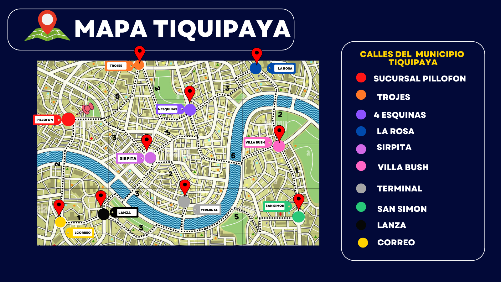

<!DOCTYPE html>
<html>
  <head>
    <meta charset="UTF-8">
    <title>Proyecto grafos aplicado</title>
    <link rel="stylesheet" href="bootstrap.min.css">
    <link rel="stylesheet" href="main.css">
    <script src="jquery.js"></script>
    <script src="angular.min.js"></script>
    <script src="bootstrap.min.js"></script>
    <script src="vis.min.js"></script>
    <script src="app.js"></script>
    <script src="redExample.js"></script>
    <script src="dijkstras.js"></script>
  </head>
</html>
<body ng-app="app">
  <header>
    <h1>Representacion del mapa de tiquipaya en busca de la ruta mas corta en el cableado de una zano a otra </h1>
    <h2>Representación de Senderos, Intersecciones y Puntos de Referencia</h2>

  </header>
  <legend class="text-center"> Busca el camino mas corto en el modo de gastar menos cableado en la instalacion </legend>

  <div ng-controller="AppCtrl"  class="container">

    <div class="row">
      <div class="well well-sm">
        <h4 class="text-center">Mapa Tiquipaya </h4>
        <ul class="nav nav-tabs">

          <li role="presentation"><a href="#shortestPath" data-toggle="tab">Camino más Corto</a></li>

        </ul>
        <div style="background-color: white; border-left: 1px solid #ddd; border-right: 1px solid #ddd; border-bottom: 1px solid #ddd; padding: 25px 10px;" class="tab-content">
          <div role="tabpanel" id="trayectos" class="tab-pane active">
            <div class="row">
              <div class="col-sm-10 col-xs-9">
                <h3>Puntos a Recorrer </h3>
                <div class="form-inline text-center">

                </div>
              </div>
            </div>
          </div>

            <div class="row">
              <div class="col-sm-12">
                <div class="form-inline text-center form-group">
                  <label>Nodo Inicial</label>
                  <select ng-options="item.label for item in nodes._data track by item.id" ng-model="nodoInicial" class="form-control"></select>
                  <label>Nodo Final</label>
                  <select ng-options="item.label for item in nodes._data track by item.id" ng-model="nodoFinal" class="form-control"></select>
                  <button ng-click="shortestPath()" class="btn btn-default">Calcular Camino más Corto</button>
                </div>
              </div>
            </div>
            <div class="row">
              <div class="col-sm-8 col-sm-offset-2 well well-sm text-center">
                <h3 ng-repeat="item in camino" style="display: inline-block;">{{ item }} <i ng-hide="$index +1 == camino.length" class="glyphicon glyphicon-menu-right"></i></h3>
              </div>
            </div>
        </div>
      </div>
    </div>


    <div class="row">
      <div class="lead">Mapa de Recorrido:</div>
      
      <div class="panel panel-default">
        <div id="network" class="panel-body">

        </div>
      </div>
    </div>

    <div class="row">
      <div class="well well-sm">
        <h4>Modelo</h4>
        <ul>
          <li ng-repeat="node in nodes._data"><strong>Id: </strong>{{ node.id }}<strong>- Label:</strong>{{ node.label }}</li>
        </ul>
      </div>
    </div>
  </div>

</body>